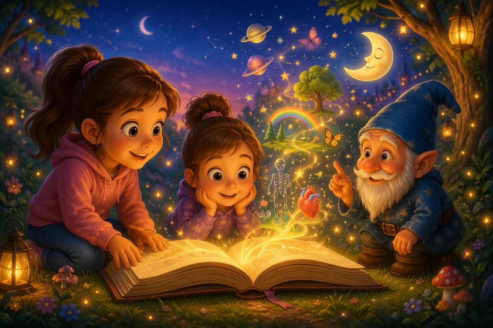

Vzdelávanie cez rozprávky
Rozprávková Akadémia Rozprávky, ktoré deťom vysvetľujú svet
Veda, príroda, emócie a životné lekcie ukryté v dobrodružných príbehoch pre deti od 4 do 10 rokov.

Rozprávky v číslach
- – Počet rozprávok
- – Počet kategórií
- – Počet odporúčaných rozprávok
Objavujte podľa kategórie
Vyberte si tému, ktorá vaše dieťa práve zaujíma, a otvorte si príbeh na mieru.
Učenie, ktoré deti baví
Tri jednoduché kroky, ktoré z čítania urobia spoločný objav.
-
Vyberiete si tému
Stačí si vybrať, čo chce dieťa spoznať — telo, emócie, prírodu, vesmír alebo vedu.
-
Spoločne prečítate rozprávku
Príbeh čítate nahlas, vo vlastnom tempe. Dialógy a napätie udržia pozornosť.
-
Dieťa pochopí nové súvislosti
Po dočítaní dieťa rozumie téme cez zážitok, nielen cez suché fakty.
Prečo vznikla Rozprávková Akadémia?
Deti si nové informácie najlepšie zapamätajú vtedy, keď ich objavia cez príbeh, emócie a fantáziu. Každá rozprávka vysvetľuje jednu dôležitú tému jednoduchým a veku primeraným spôsobom.
- Primerané veku detí
- Poučné a zábavné
- Pripravené na spoločné čítanie
Pomôžte nám tvoriť ďalšie rozprávky
Rozprávková Akadémia je dostupná bezplatne. Dobrovoľným príspevkom môžete podporiť vznik nových príbehov a ilustrácií.
Podporiť projekt